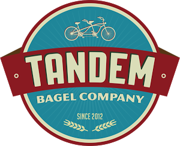

Josh Karnofsky's Website
About Me
Full Name:
Josh Karnofsky
Email:
Josh@JoshKarnofsky.com
Location:
Philadelphia, PA
School:
University of Pennsylvania,
Class of 2017
I am interested in all forms of creation. This most often manifests in my programming and music projects as well as my entrepreneurial interests. It has also led to me often exploring new things to learn from photo editing in Adobe Photoshop to making short films in Adobe Premiere Pro. I closely follow new technology and startups, and enjoy experimenting with new programming languages and frameworks.

Projects
InferMD
An iPhone application providing quick calculations to medical students or doctors based on supposed diagnoses and patient data.
Learn More
NBA Outcomes with Neural Nets
As the final project for my Machine Learning course, I worked in a small team to develop a neural net model for predicting the outcomes of NBA games based on the results of previous games.
Learn More
SpyCam
As a fun “spy” tool for kids, this iPhone application allows users to access photo and video options while under the guise of looking at applications.
Learn More
Flock
A NodeJS web application that provides users with the ability to find other members interested in going to the same event.
Learn More
Sound Reactive LED Light Display
An RGB LED light system using a Raspberry Pi and Python that reacts in real-time to any audio streamed through a connected stereo receiver.
Learn More
Tandem Bagels
An interactive Android application for the Tandem Bagel Company's restaurant.
Learn More
Solving the App Submission Problem
A post about how I automated the app submission process during my 2014 internship.
Developing SpyCam
The story of how I went about creating my first iPhone application SpyCam back in 2014, and the important things I learned along the way as I faced the unexpected challenges of development.
Technologies and Methodologies Used: Swift, Agile Development, Trello, Slack
An iPhone application providing quick calculations to medical students or doctors based on supposed diagnoses and patient data. Initially intended as a submission to the Pennvention competition, this project quickly became much more. Working with three graduate students, one in business and two in medical school, I developed an MVP for their medical startup endeavor while they seeked funding, mentors, and beta users.
As a team, we worked using Agile development methodologies, with weekly syncs during which I would demonstrate progress to the application and they would provide feedback as well as updates on funding and market research. With my technological background, I was often able to suggest simplified and effective ways users could interact with the application.
Although still an MVP, I strongly considered scalability throughout the development process. This meant creating a dynamic UI that pulls and displays questions of different forms (boolean, multiple choice, integer, etc.) from a database that can easily be updated without making changes to the app itself.
Screenshots
Learning NBA Outcomes with
Neural Nets
Technologies Used: Python (sklearn)
As the final project for my Machine Learning course, I worked in a small team to develop a neural net model for predicting the outcomes of NBA games based on the results of previous games. Ultimately, we succeeded in reaching an accuracy of 78 percent on our best run, which beat even the top experts at 76 percent.
In order to aggregate enough data to create an accurate model, we created a script that scraped data for 2000 games and parsed it into different categories. Ultimately, we provided the neural net with an input of the average statistics of the top five players from each team over their most recent games along with the outcome of that game. We worked to optimize every factor, including the number of hidden layers, the number of games we average, and which statistics we factored in.
Link to Report
SpyCam
Technologies Used: Objective-C, CocoaPods
As a fun “spy” tool for kids, this iPhone application allows users to access photo and video options while under the guise of looking at applications. This is done by allowing the user to import screenshots of other applications and flip through them, with specific gestures initiating the camera.
As the application could not provide any visual cues that would give away its usage, this application opened up an interesting challenge of a gesture based user experience. Ultimately, I spent a large portion of development fine tuning this process so that every gesture was explained and intuitive.
Screenshots
Technologies Used: Javascript (Node & Express), HTML, CSS, MongoDB
Developed as a PennApps hackathon project and used as an opportunity to experiment with nodejs development, this web application provides users the ability find other members interested in going to the same event. By creating a “flock,” users can group together in order to carpool and bond over a similar interest.
Developing this application involved creating a registration process in which accounts could be created with a username and password or authenticated through Facebook. Accounts are stored to a MongoDB database, with passwords encrypted for security.
Sound Reactive LED Light Display
Technologies Used: Raspberry Pi wired to LED lights, Python (pigpio, pyaudio, numpy, cherrypy)
An RGB LED light system that reacts in real-time to any audio streamed through a connected stereo receiver. The Python script was developed scratch, as no other solutions provided a similar effect to my desired quality level. Over several weeks, the script was continuously tweaked until it offered a multitude of reactive options and perfectly smooth transitions of the colors and brightness.
Further, in order to access and control the lights at any time, from anywhere, I developed a python server and website using cherrypy. With the server running, I can access the light controls directly from my phone or computer.
Hardware Setup: The audio source is passed into an Onkyo receiver which outputs a signal to both speakers and to a monitor out port on the receiver. An RCA to aux cable takes that signal and then a stereo to mono jack converts the signal for processing. Next, the signal runs into a USB soundcard which is hooked up to and configured for the Raspberry Pi. The Raspberry Pi analyzes this signal using PyAudio and Audioop to detect rms values. This rms value is passed to several functions which determine what the current brightness and color of the lights should be. Next, the script uses pigpio to send a signal for each of the pins on the GPIO board on the Raspberry Pi. Jumper wires are connected from these pins to a breadboard which is also hooked up to a power supply and the RGB LED lights. The result is a real-time processing of any audio through the receiver and conversion into both the brightness and color of the lights in the room, dependent on relative amplitudes of the music.
Link to Source Code

Tandem Bagels Android App
Technologies and Methodologies Used: Java (Android), Firebase, Jira, Agile Development
An interactive Android application for the Tandem Bagel Company. Using agile development methodologies and through direct communication with the company, this application provides access to the restaurant’s menu, directions, and rewards/ordering system.
Working with a team, we created this application in order to allow customers to earn more by being customers of Tandem Bagel Co. Using Firebase for our database and authentication, we developed an account creation system for the app. Once registered, users are able to create orders directly from the application, and receive rewards for their purchases. We also created an administration system, through which the restaurant owners can edit the menu, reward options, other admins, and the daily “tip war” poll.